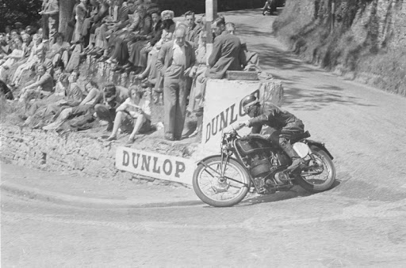

l'invention de la moto a parue le 16 mars 1869 par un ingenieur francais Louis-Guillaume Perreaux qui a deposé le premier brevet d'un vélocipède a grande vitesse en 1868. Perreaux a améliorer son invention jusqu'en 1885. On l'appelleras le vélocipède a vapeur Perreaux.
Sylvestre Roper inventeur du Massachusetts, a contruit un vélocipède a vapeur Sylvestre Roper en faisait la demonstration dans des foires et cirque. Le cadre du velocipède et en fer forgé et des roue en bois il utile réservoir a eau pour la chaudiére qui etait chauffée par un foyer qui bruler du charbon de bois
Gottlieb Daimler est un ingénieur allemand en mécanique, fondateur de la marque de moteur et automobile allemande (Damler-Motoren-Gesellschft) rebatisée Daimler-Mercedes-Benz. Il créat le premier moteurs a petrole, Daimler avait voulu tester son moteur a pétrole 4 temps sur un velo en bois avec deux roulette pour la stabilité. Par la suite Daimler oubliras le deux roues et s'orienterat vers la motorisation multiple vehicule sur terre.
Félix Millet fabrique un moteur rotatif 5 cylindres en étoile en 1887. Sur un moteur rotatif à cylindres en étoile, le vilebrequin est fixe, c'est le moteur qui tourne, technique utilisée ensuite sur des moteurs d'avion
la Hildebrand & Wolfmüller, quelques instants avant le XXeme siècle. Cette machine est considérée comme la première moto produite en série de l’histoire, a ne pas confondre avec la moto, le vélocipède à vapeur Perreaux, fabriqué de façon artisanale. les frères Hildebrand construisent une première version à vapeur. Celle-ci servira de base de développement pour la véritable moto qui sera construite 3 ans plus tard.
En 1893, ils créent l'entreprise « Werner frères et Compagnie » dont les premières activités concernent diverses inventions,En 1897, ils déposent un brevet d'invention d'une bicyclette motorisée au petrole qu'ils appellent « Motocyclette » créant ainsi le terme générique.
Un sport motocycliste est une compétition consistant en des courses de motocyclettes. Le sport motocycliste est mit au niveau mondial par la Fédération internationale de motocyclisme (FIM), fondée en 1904.
